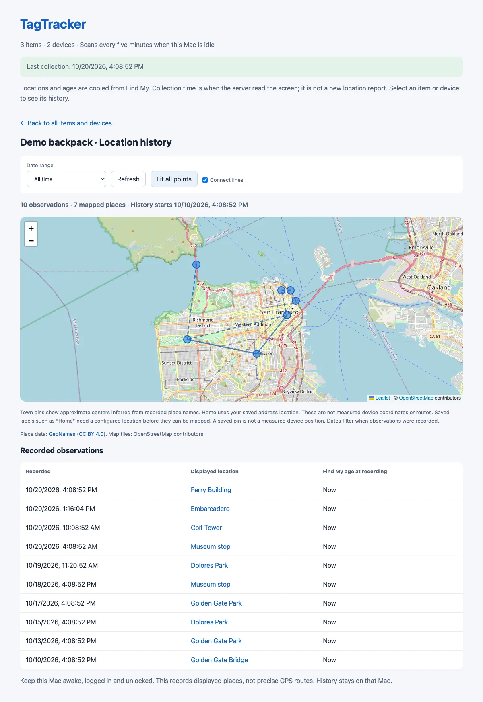
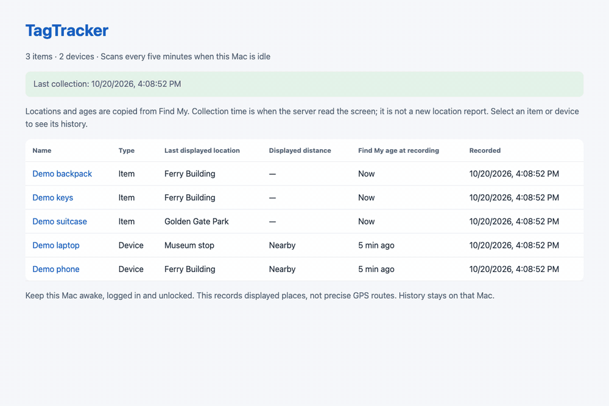
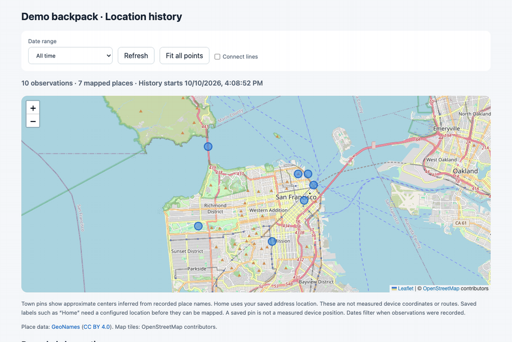
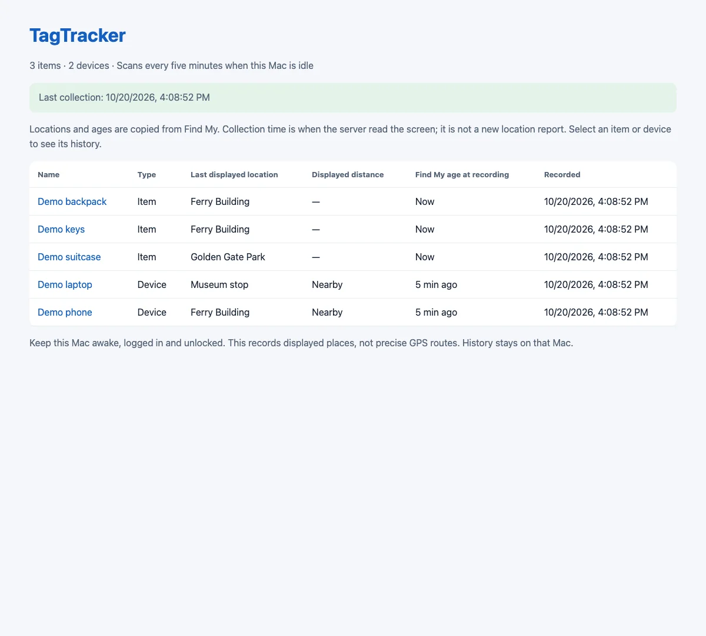

01 / Keep
Your history, on your Mac.
Observations are saved locally in SQLite. No TagTracker account, Apple-account password, or cloud subscription.
TagTracker
Your keys. Your bag. Your next trip. Save the places Find My displays, then look back on a map whenever you need to.
For macOS · Free & open source
Apple silicon · macOS 14+ · Experimental · Free download

01 / Keep
Observations are saved locally in SQLite. No TagTracker account, Apple-account password, or cloud subscription.
02 / Explore
See the last day, week, month, or all your saved history. Choose custom dates and fit the map to every displayed pin.
03 / Pause
Collection waits for an idle Mac and pauses during macOS Screen Sharing. Find My closes when the scan ends.
Two quick looks
Two short demos of the actual dashboard, captured with fictional items and observations at public landmarks.
Select an item and switch between the last day, week, and all time.

Connect timeline points, inspect a pin, and fit every displayed place.

Take a closer look

Make yourself at home
Download the Mac app, drag TagTracker into Applications, and open it there. The installer disk ejects automatically. Choose your items, allow the macOS permissions, and start tracking. Signed updates are delivered with Sparkle.
Read the setup and source guidegit clone https://github.com/danielyaa5/tagtracker.git
cd tagtracker
make build
python3 scripts/setup.py --item 'Keys' --item 'Backpack'The setup guide includes the service commands and removal instructions.
Report an issue on GitHub, or email support@danielyakobian.com.
By Daniel Yakobian · MIT license. AirTag is a trademark of Apple Inc. TagTracker is independent and is not affiliated with or endorsed by Apple. All demo items and observations are fictional.